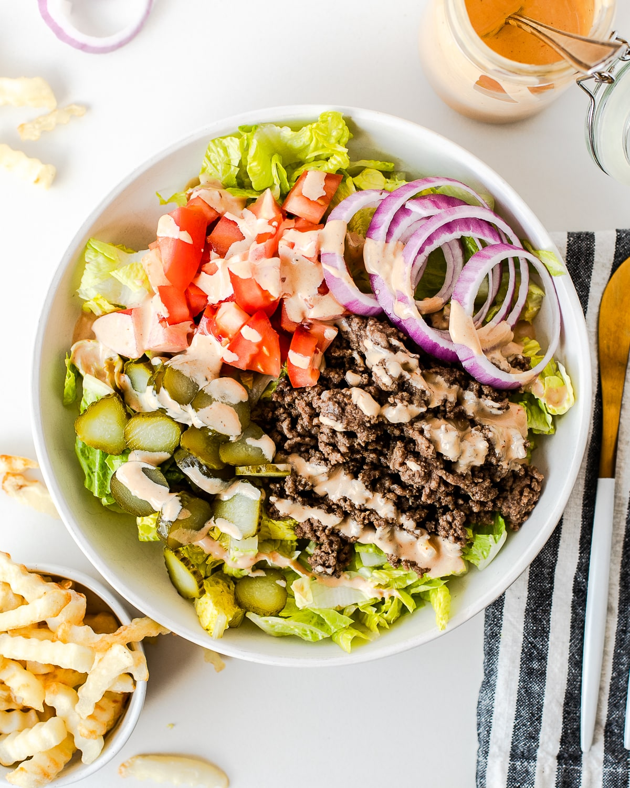

Burger In A Bowl

This tasty burger in a bowl is a great way to get some protein in your diet without sacrificing any of the delicious flavors of fast food.
The total macros will be about 500 calories and 55-60 grams of protein.
Ingredients
- 1/2 pound of Grass-Fed Ground Beef
- 1/4 cup Shredded Cheese
- 1 Slice of Turkey Bacon
- 1/4 Onion
- 1/4 Avocado
- Pickles
- Avocado/Olive Oil Spray
- Seasonings of Choice
Steps
- Dice up your onion, pickles, and avocado.
- Season your ground beef and separate it into two equal size patties.
- Warm your pan up on medium-high heat.
- Spray some oil onto the pan.
- Place the burgers on the pan, making sure to get a good sear on the meat. That is how you get the extra umami flavor.
- Flip the burgers, then place equal parts cheese on each bun.
- Add a lid on top so the cheese melts.
- Once the patties are cookes, take them off, put them in a bowl, and oil the pan again.
- Place the diced onions on one side, letting them caramelize.
- Place the slice of turkey bacon on the other side.
- Once the onions are cooked, throw them into the bowl.
- Place the bacon on a cutting board and cut it into small pieces.
- Add the bacon, pickles, and avocado to the bowl.
- Top with a sauce of your choice and enjoy!